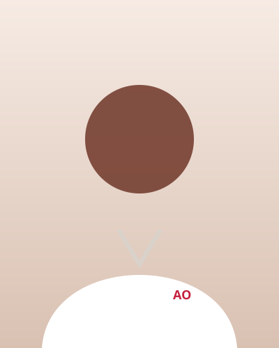

Paris11ᵉ
18 rue des Tilleuls, 75011 Paris · Métro Nation
| Lundi | 8h30 – 21h30 |
| Mardi | 7h30 – 21h30 |
| Mercredi | 7h30 – 20h30 |
| Jeudi – Dimanche | Fermé |
Prise de rendez-vous en ligne.
Ostéopathe · Paris · Lyon
Atelier Ostéo vous accueille à Paris et à Lyon pour soulager vos douleurs et prendre soin de votre santé à chaque âge de la vie.
18 rue des Tilleuls, 75011 Paris · Métro Nation
| Lundi | 8h30 – 21h30 |
| Mardi | 7h30 – 21h30 |
| Mercredi | 7h30 – 20h30 |
| Jeudi – Dimanche | Fermé |
Prise de rendez-vous en ligne.
6 rue des Canuts, 69004 Lyon
| Lundi – Mercredi | Sur appelouverture possible selon besoin |
| Jeudi | 8h – 20h |
| Vendredi | 8h – 20h |
| Samedi | 14h – 20hRDV par téléphone uniquement |
| Dimanche | Fermé |
Le samedi après-midi, rendez-vous uniquement par téléphone. Du lundi au mercredi, appelez : le cabinet peut ouvrir si besoin.
Pour qui ?
Coliques, torticolis, troubles du sommeil, accompagnement pendant la croissance.
Douleurs de dos, bassin, préparation à l'accouchement et suivi après la naissance.
Prévention des blessures, récupération et mobilité, avec un objectif : vous aider à écouter votre corps et à rester autonome.
Lombalgies, cervicalgies, maux de tête, tensions liées au stress ou au travail sur écran.

Votre ostéopathe
Ostéopathe et fondatrice d'Atelier Ostéo, à Paris et à Lyon. Une pratique douce et précise, centrée sur l'écoute du corps et la compréhension de la personne dans son ensemble.
Le corps est un tout : comprendre les liens compte souvent plus que la zone douloureuse elle-même.
Après sa formation d'ostéopathe, Camille a progressivement développé une approche personnelle, qui privilégie la précision du toucher et les techniques douces plutôt que la force.
Chaque séance cherche à comprendre d'où vient la gêne, puis à donner au patient les clés pour rester en forme entre deux rendez-vous, sans créer de dépendance vis-à-vis du thérapeute.
Notre approche
Une douleur apparaît rarement sans histoire. Notre corps s'adapte en permanence aux contraintes, aux blessures et aux habitudes du quotidien.
Un temps pour parler de vos symptômes, de votre histoire et de votre quotidien.
Des techniques douces et adaptées, choisies pour vous et pour ce que votre corps permet aujourd'hui.
Des conseils et exercices simples pour prendre soin de vous entre deux séances.
Notre signature : « Le geste juste. »
Notre premier cabinet, à quelques minutes de Nation. Un lieu calme et lumineux pour prendre le temps.
La même approche qu'à Paris, sur les pentes de la Croix-Rousse : écoute, précision et douceur du geste.
Conseils en vidéo
Exercices, assouplissements et bons réflexes : de courtes vidéos pour prendre soin de vous à la maison.
Avis patients
★★★★★ 120 avis · Paris avis d'exemple
Très à l'écoute et rassurante. Mon mal de dos s'est apaisé après deux séances, et je suis repartie avec des exercices simples à faire chez moi.
Douce et précise. Elle prend le temps d'expliquer ce qu'elle fait et pourquoi. Je recommande.
Venue avec mon bébé pour des coliques : très douce, et de très bons conseils pour les jours suivants.
Coureur, j'ai apprécié les conseils adaptés à mon entraînement. Plus de douleur au genou.
Un lieu calme et une vraie écoute. Je me suis sentie comprise dès le premier rendez-vous.
Efficace pour mes tensions cervicales liées au travail sur écran. Explications claires.
Réservez en quelques clics, au créneau qui vous convient — même tôt le matin ou en soirée.
Prendre rendez-vousCe site est un site de démonstration réalisé dans le cadre d'un portfolio. Atelier Ostéo, sa praticienne, les adresses, numéros de téléphone et avis sont fictifs. Toute ressemblance avec des personnes ou des entreprises existantes serait fortuite.
Ce site ne collecte aucune donnée personnelle. Les cartes (Google Maps) et les polices (Google Fonts) sont chargées depuis les serveurs de Google.